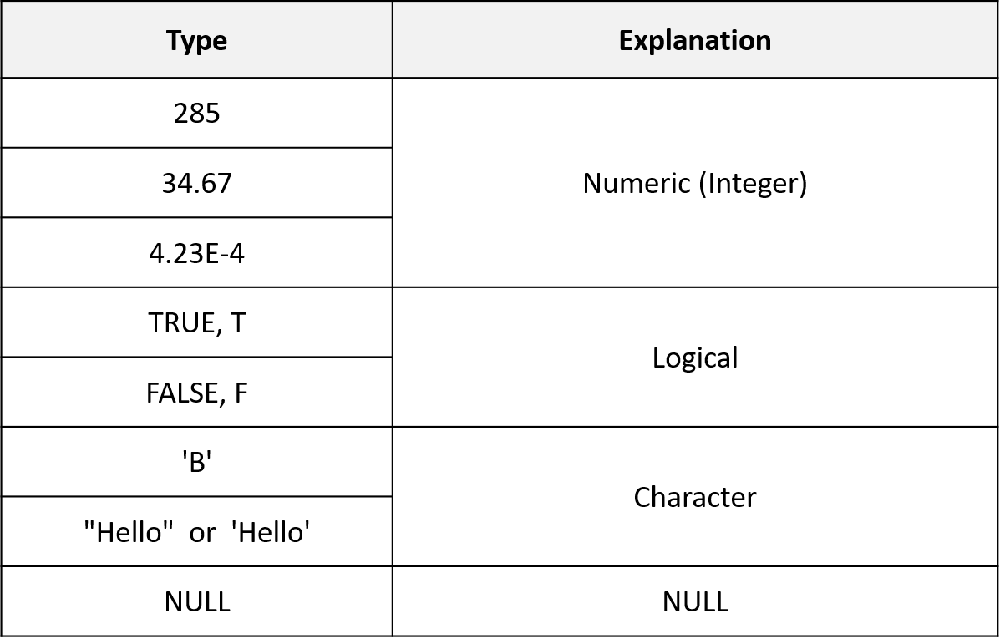

Chapter 3 R programming basics
3.1 Terminology
- Session: R 언어 실행 환경
- Console: 명령어 입력하는 창
- Code: R 프로그래밍 변수/제어문 모음
- Objects (개체, variable): 데이터(값, value)가 저장되는 장소
- Object (variable) types:
- Vectors: 값들의 모임 combine function
c()EX: c(6, 11, 13, 31, 90, 92) - Factors: 범주형 데이터 저장 장소
- Data frames: 2D matrix 형태 데이터 자장 장소
- Vectors: 값들의 모임 combine function
- Data (value) types: Integers, doubles/numerics, logicals, and characters.
- Conditionals (조건, 제어):
if,==,&(AND),|(OR) Ex:(2 + 1 == 3) & (2 + 1 == 4)for,while: 반복 수
- Functions (함수, commands): 특정 일 수행, 함수이름 - 입력값 (arguments) - 출력값 (output) 으로 구성
3.2 R console script
콘솔에서 바로 계산을 수행할 수 있습니다. 참고로 이전에 수행한 명령은 콘솔에 커서가 있는 상태에서 위 아래 화살표를 누르면 볼 수 있고 엔터를 눌러 재사용 할 수 있습니다. ;을 사용하면 두 개의 명령을 동시에 수행할 수 있습니다.
\[ 2 + 2 \] \[ ((2 - 1)^2 + (1 - 3)^2)^{1/2} \]
3.3 What is a programming language


3.4 Variables and values
- R is a programming language
- Assignment operator (
<-OR=)- Valid object name
<-value - 단축키:
Alt + -(the minus sign)
- Valid object name
- 내장 변수 Built-in variables
- 변수이름 작명법
- Characters (letters), numbers, “_”, “.”
- A and a are different symbols
- Names are effectively unlimited in length
i_use_snake_case <- 1
otherPeopleUseCamelCase <- 2
some.people.use.periods <- 3
And_aFew.People_RENOUNCEconvention <- 4- 자동 완성 기능 (Tab completion) in RStudio
3.5 Variable type of (storage) mode

3.6 Variable - Vectors
vector는 R의 기본 데이터 구조입니다. numeric vector, logical vector, character vector 등 저장되는 값의 타입에 따라 크게 세가지로 나눌 수 있습니다. class() 함수를 이용해서 값의 타입을 알아낼 수 있습니다. Combine function인 c()를 활용하여 만들며 값을 순차적으로 붙여갈 수 있습니다.
x <- c(10.4, 5.6, 3.1, 6.4, 21.7)
class(x)
y <- c("X1", "Y2", "X3", "Y4")
class(y)
z <- c(T, F, F, T)
class(z)이 중 특히 numeric 형식의 벡터를 만드는 다양한 편의 함수들이 존재합니다.
1:5
seq(1,5, by=1)
seq(0, 100, by=10)
seq(0, 100, length.out=11)
?seq
rep(5, times=10)
rep(1:3, times=4)Logical 벡터는 True 또는 False를 원소로 갖는 벡터 입니다. 특정 조건에 대한 판단을 반환할 경우에도 논리값을 사용합니다. 앞글자가 대분자로 시작하는 것을 기억하시고 T 또는 F와 같이 한 문자로 표현할 수도 있습니다.
is.na(1)
is.numeric(1)
is.logical(TRUE)
x > 13
temp <- x > 13
class(temp)
which(ages < 30)
any(ages < 30)
all(ages < 30)Character(문자형) 벡터의 경우 문자열을 다루는데 자주 쓰이는 paste() 함수의 사용법을 알아두면 편리합니다.
x <- c("X1", "Y2", "X3", "Y4", "X5")
paste("X", 1:5, sep="")
paste("X", "Y", "Z", sep="_")
paste(c("Four","The"), c("Score","quick"), c("and","fox"), sep="_")
paste(c("X","Y"), 1:10, sep="")vector 데이터들은 다음과 같은 builtin 함수들이 자주 함께 사용됩니다.
head(precip)
class(precip)
length(precip)
names(precip)
order(names(precip))
test_scores <- c(100, 90, 80)
names(test_scores) <- c("Alice", "Bob", "Shirley")
test_scores인덱싱은 vector 데이터의 일부 데이터를 참조할 때 사용하는 방법입니다.
3.7 Functions
함수(Function)는 프로그래밍 과정에서 사용자가 필요로하는 기능을 수행하는 명령어를 말하며 다음과 같은 포멧으로 함수를 구현할 수 있습니다.
예를 들어 다음과 같은 my_sine 함수를 만들 수 있으며 x는 parameter (매개변수)이고 y는 반환값을 저장하는 지역변수 입니다.
만들어진 함수는 다음과 같이 사용할 수 있습니다. 여기서 함수로 전달되는 값 pi는 argument (전달인자) 라고 합니다. 전달인자는 함수에서 정의된 매개변수의 갯수와 같은 수의 전달인자를 입력해 주어야 합니다.
- Terminology
- function name:
my_sine - parameter:
x - argument:
pi - return value:
y
- function name:
다음 코드를 보면 전역변수 x, y는 지역변수 x, y와 독립적으로 사용됨을 알 수 있습니다.
my_half <- function(x){
y <- x/2
cat("local variable x:", x, "\n")
cat("local variable y:", y, "\n")
return(y)
}
y <- 100
x <- 20
cat("Global variable x:", x, "\n")
cat("Global variable y:", y, "\n")
my_half(5)log, sin등의 함수들은 Built-in function으로 같은 이름의 함수를 만들지 않도록 주의합니다.
3.8 Vectorized functions
3.9 Exercise 3-1
다음은 한 다이어트 프로그램의 수행 전 후의 다섯 명의 몸무게이다.

- 각각을 before 와 after 이름의 변수에 저장 후 몸무게 값의 변화량을 계산하시오.
- before값들의 평균을 구하시오 (mean() 함수 사용)
- my_mean 이라는 이름의 함수로 평균을 구하는 코드를 작성 하시오 (빌트인 함수 사용하지 않음)
- 함수이름: my_mean
- parameter: x
- return 값: y
- (x[1]+x[2]+x[3]+x[4]+x[5])/5
- 빌트인 함수 sum()과 length()를 이용해 동일한 기능을 하는 함수를 작성하시오
- 함수이름 my_mean2
- sum(), length() 사용
3.10 Excercise 3-2
다음 네 학생이 있으며 “John”,“James”,“Sara”, “Lilly” 각 나이는 다음과 같음. 21, 55, 23, 53. ages 라는 변수를 생성하고 각 나이를 저장한 후 who라는 이름의 함수를 만들어서 50살 이상인 사람의 이름을 출력하는 함수를 만드시오.
- ages라는 변수에 나이 저장, c() 함수 이용, vector 형태 저장
- names() 함수 이용해서 각 ages 벡터의 각 요소에 이름 붙이기
- which() 함수 사용해서 나이가 50보다 큰 인덱스 찾고 해당 인덱스 값 출력 하기
- ages를 메개변수로 받아서 나이가 50보다 큰 인덱스 찾고 해당 인덱스의 값을 반환해 주는 who 함수 만들고 사용

이 저작물은 크리에이티브 커먼즈 저작자표시-비영리-변경금지 4.0 국제 라이선스에 따라 이용할 수 있습니다.